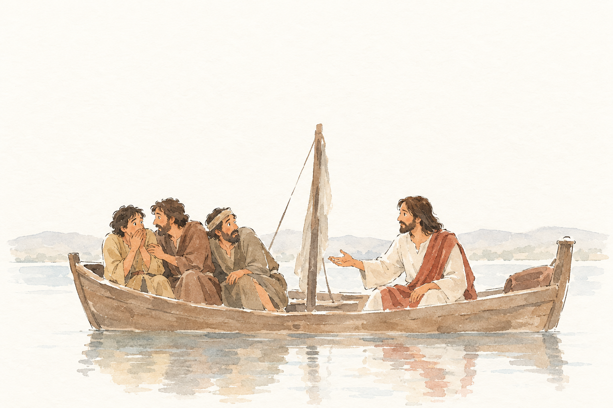
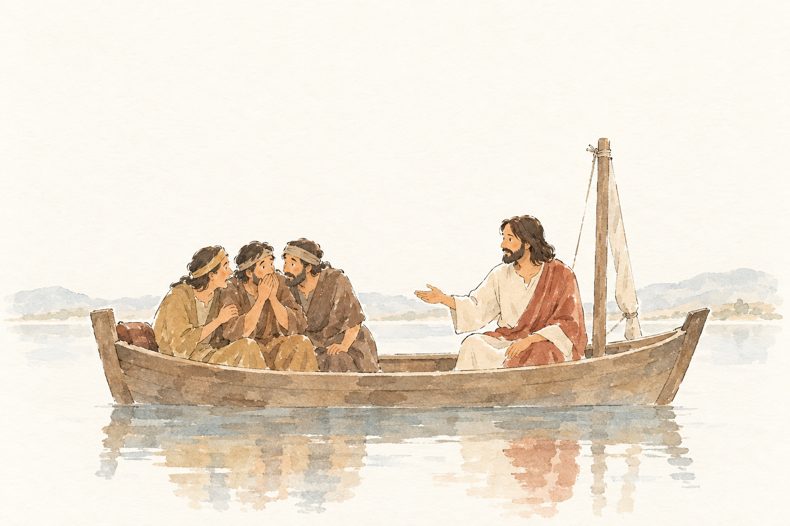

Kachel: bestanden, Kern 2 Nichts Wesentliches fehlt.

MRK-004-S3__r1v1.png ✔ gewählt: bestanden, 5 Punkte, Kern 2 Die ehrfürchtige Frage der Jünger («Wer ist dieser?») wird nicht ausdrücklich erwähnt.
Blind: Four men are sitting in a wooden boat on calm water. The man on the right is gesturing and speaking toward the three men on the left, who look worried or attentive. The scene suggests a tense conversation after or during a moment of danger on the water. – This likely illustrates the Bible story of Jesus calming the storm, specifically the moment when Jesus speaks to the frightened disciples in the boat, possibly after the water has become calm.

MRK-004-S3__r1v2.png: bestanden, 4 Punkte, Kern 1 Die konkrete Szene nach der Sturmstillung fehlt: die große Furcht/Staunen der Jünger und ihre Frage, dass Wind und See Jesus gehorchen. Jesu Tadel wegen mangelnden Glaubens ist nur allgemein als Sprechen erkennbar.
Blind: Four people sit in a wooden boat on calm water. The bearded man in white and reddish-brown appears to be speaking or explaining something, while the three people on the left huddle closely and listen or react quietly. – This appears to illustrate a Bible scene with Jesus and disciples in a boat, possibly Jesus teaching or speaking to them on the Sea of Galilee. The exact moment is not certain because no storm, fishing nets, or walking-on-water scene is visible.
Kachel: bestanden, Kern 2 Nichts Wesentliches fehlt.